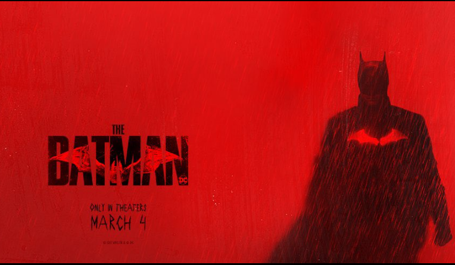
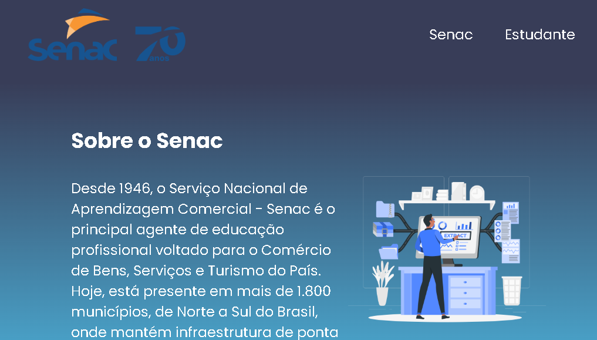
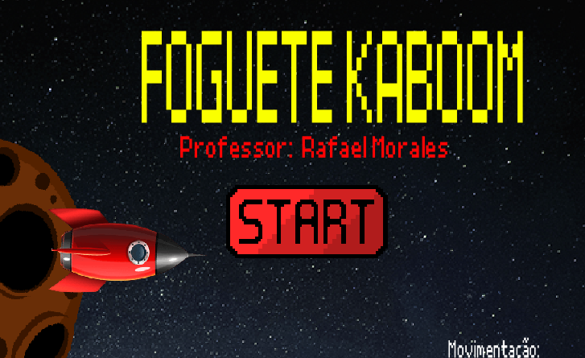

Meus Projetos

Projeto de site "CineSenac"
Um site dedicado à divulgação de estreias, clássicos e eventos cinematográficos. Aqui você encontra trailers, Galeria de fotos, Cards dos Atores, Localização do cinema e um formulário de contato.

Projeto de site "Estudantes Senac"
Bem-vindo ao nosso espaço dedicado aos alunos do Senac! Aqui, você encontra uma coleção de fotos que celebram a diversidade e a criatividade dos estudantes.

Projeto em Scratch Foguete Kaboom
Prepare-se para embarcar em uma missão espacial emocionante com o projeto Foguete Kaboom.